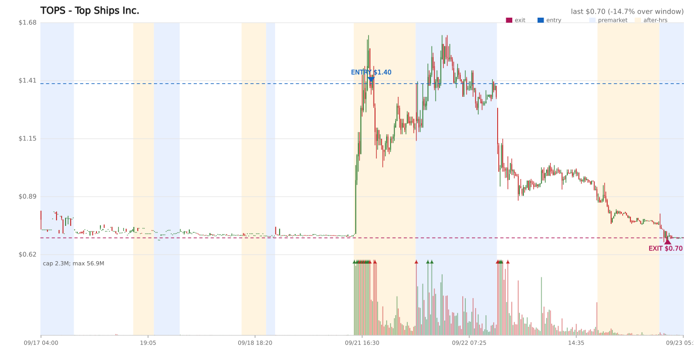
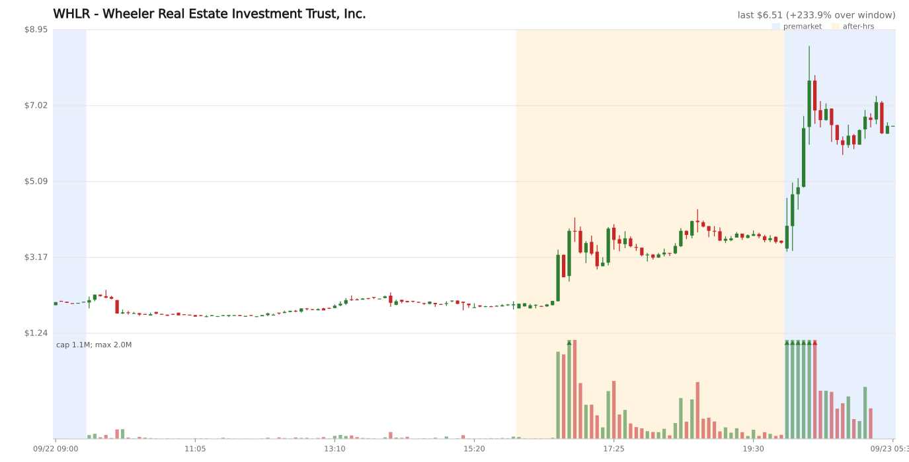

Charts


Daily log
## Position Evaluation — 10:30 CET
| Ticker | Entry | Current | P&L % | Peak | Peak P&L % | Days | Grade | Decision | Reason |
|--------|-------|---------|-------|------|------------|------|-------|----------|--------|
| TOPS | $1.40 | $1.32 | -5.7% | $1.62 | +15.7% | 1 | None | HOLD | Above the $1.26 hard stop; no profit trigger; no trailing stop applies. |
**Actions taken:**
- Alpaca remains the source of truth: 64 TOPS shares at $1.40 entry and current price $1.32.
- SIP bars verified the $1.62 peak; premarket traded $1.14-$1.41 with VWAPs $1.21-$1.29.
- Broker quote returned bid $1.50 / ask $1.56 with a 2026-09-21 timestamp, so it was not used as the P&L basis.
- Updated `OPEN_POSITIONS.md` with current price, verified peak, P&L, and hard stop.
- No sell order submitted. Re-evaluate at the next premarket pulse; sell at a profit or at/below the $1.26 hard stop.
## Position Evaluation — 14:30 CET
| Ticker | Entry | Current | P&L % | Peak | Peak P&L % | Days | Grade | Decision | Reason |
|--------|-------|---------|-------|------|------------|------|-------|----------|--------|
| TOPS | $1.40 | $1.32 | -5.7% | $1.62 | +15.7% | 1 | None | HOLD | Below-profit exit trigger and above the $1.26 hard stop. No trailing stop applies. |
**Actions taken:**
- Alpaca remains the source of truth: 64 TOPS shares at $1.40 entry and current price $1.32.
- Real quote: bid $1.32 x2,200 / ask $1.34 x700 at 12:30:27Z; no sell order was needed.
- SIP bars verified today's high at $1.57 and did not exceed the stored $1.62 peak.
- Updated `OPEN_POSITIONS.md`; no position was sold or stop updated.
## Scan 21:30 CET (3:30 PM ET)
**Session:** REGULAR. After-hours had not opened, so all candidates remain observation-only. A candidate must reappear at 22:00 CET or later with sustained AH momentum before any paper entry.
| Ticker | Chart | Close | Day% | AH Chg | AH Price | Total% | AH Vol | AvgVol | VRatio | Float | Industry | Decision |
|--------|-------|-------|------|--------|----------|--------|--------|--------|--------|-------|----------|----------|
| XTER | [TV](https://www.tradingview.com/chart/?symbol=XTER) | $9.79 | +0.0% | — | — | — | — | 16K | — | 20.6M | Financial Conglomerates | Watch — pending AH confirmation |
| RFAM | [TV](https://www.tradingview.com/chart/?symbol=RFAM) | $10.00 | +0.0% | — | — | — | — | 50K | — | 9.7M | Financial Conglomerates | Watch — pending AH confirmation |
| GAYMF | [TV](https://www.tradingview.com/chart/?symbol=GAYMF) | $0.63 | +32.5% | — | — | — | — | 16K | — | 96.1M | Precious Metals | Watch — pending AH confirmation |
| GBLRF | [TV](https://www.tradingview.com/chart/?symbol=GBLRF) | $0.71 | +146.4% | — | — | — | — | — | — | 135.3M | Other Metals/Minerals | Watch — pending AH confirmation |
| NXLLF | [TV](https://www.tradingview.com/chart/?symbol=NXLLF) | $0.81 | -46.0% | — | — | — | — | 5K | — | 315.3M | Packaged Software | Watch — pending AH confirmation |
| GDC | [TV](https://www.tradingview.com/chart/?symbol=GDC) | $1.64 | +12.0% | — | — | — | — | 21K | — | 4.1M | Packaged Software | Watch — pending AH confirmation |
| DRTTF | [TV](https://www.tradingview.com/chart/?symbol=DRTTF) | $0.60 | +5.7% | — | — | — | — | 15K | — | 154.5M | Building Products | Watch — pending AH confirmation |
| LHSW | [TV](https://www.tradingview.com/chart/?symbol=LHSW) | $0.81 | +87.0% | — | — | — | — | 561K | — | 1.0M | Computer Processing Hardware | Watch — pending AH confirmation |
| IMCC | [TV](https://www.tradingview.com/chart/?symbol=IMCC) | $5.58 | +80.9% | — | — | — | — | 375K | — | 546K | Agricultural Commodities/Milling | Watch — pending AH confirmation |
| RAIN | [TV](https://www.tradingview.com/chart/?symbol=RAIN) | $1.04 | +57.4% | — | — | — | — | 2.1M | — | 3.4M | Financial Conglomerates | Watch — pending AH confirmation |
| FLNA | [TV](https://www.tradingview.com/chart/?symbol=FLNA) | $1.05 | +42.7% | — | — | — | — | 320K | — | 47.3M | Biotechnology | Watch — pending AH confirmation |
| QNME | [TV](https://www.tradingview.com/chart/?symbol=QNME) | $0.89 | +38.9% | — | — | — | — | 233K | — | 25.8M | Air Freight/Couriers | Watch — pending AH confirmation |
| TOPS | [TV](https://www.tradingview.com/chart/?symbol=TOPS) | $0.97 | +35.1% | — | — | — | — | 156K | — | 4.1M | Marine Shipping | Watch — pending AH confirmation |
| CWD | [TV](https://www.tradingview.com/chart/?symbol=CWD) | $0.68 | +31.3% | — | — | — | — | 110K | — | 10.2M | Investment Managers | Watch — pending AH confirmation |
| TPST | [TV](https://www.tradingview.com/chart/?symbol=TPST) | $1.01 | +30.5% | — | — | — | — | 94K | — | 9.6M | Pharmaceuticals: Major | Watch — pending AH confirmation |
| SDEV | [TV](https://www.tradingview.com/chart/?symbol=SDEV) | $1.27 | +27.1% | — | — | — | — | 34K | — | 1.8M | Pharmaceuticals: Major | Watch — pending AH confirmation |
| EPSM | [TV](https://www.tradingview.com/chart/?symbol=EPSM) | $1.55 | +24.0% | — | — | — | — | 18K | — | 2.7M | Food Distributors | Watch — pending AH confirmation |
| AVAT | [TV](https://www.tradingview.com/chart/?symbol=AVAT) | $2.26 | +20.9% | — | — | — | — | 19K | — | 31.8M | Financial Conglomerates | Watch — pending AH confirmation |
| AIXC | [TV](https://www.tradingview.com/chart/?symbol=AIXC) | $1.34 | +20.7% | — | — | — | — | 6K | — | 7.1M | Packaged Software | Watch — pending AH confirmation |
| STFS | [TV](https://www.tradingview.com/chart/?symbol=STFS) | $3.50 | +20.7% | — | — | — | — | 601 | — | 1.1M | Advertising/Marketing Services | Watch — pending AH confirmation |
| GOAI | [TV](https://www.tradingview.com/chart/?symbol=GOAI) | $2.11 | +20.6% | — | — | — | — | 2K | — | 12.7M | Packaged Software | Watch — pending AH confirmation |
| DCOY | [TV](https://www.tradingview.com/chart/?symbol=DCOY) | $3.08 | +20.1% | — | — | — | — | 102K | — | 571K | Biotechnology | Watch — pending AH confirmation |
| STEX | [TV](https://www.tradingview.com/chart/?symbol=STEX) | $0.85 | +17.8% | — | — | — | — | 56K | — | 105.3M | Investment Banks/Brokers | Watch — pending AH confirmation |
| JTAI | [TV](https://www.tradingview.com/chart/?symbol=JTAI) | $1.74 | +17.6% | — | — | — | — | 15K | — | 3.4M | Airlines | Watch — pending AH confirmation |
| CCEL | [TV](https://www.tradingview.com/chart/?symbol=CCEL) | $4.15 | +17.6% | — | — | — | — | 833 | — | 4.2M | Other Transportation | Watch — pending AH confirmation |
| SRFM | [TV](https://www.tradingview.com/chart/?symbol=SRFM) | $0.78 | +17.1% | — | — | — | — | 59K | — | 99.4M | Airlines | Watch — pending AH confirmation |
| SPRO | [TV](https://www.tradingview.com/chart/?symbol=SPRO) | $1.32 | +15.8% | — | — | — | — | 26K | — | 43.0M | Biotechnology | Watch — pending AH confirmation |
| EU | [TV](https://www.tradingview.com/chart/?symbol=EU) | $1.22 | +15.7% | — | — | — | — | 69K | — | 190.4M | Other Metals/Minerals | Watch — pending AH confirmation |
| QCLS | [TV](https://www.tradingview.com/chart/?symbol=QCLS) | $0.91 | +15.5% | — | — | — | — | 15K | — | 7.8M | Pharmaceuticals: Major | Watch — pending AH confirmation |
| FEAM | [TV](https://www.tradingview.com/chart/?symbol=FEAM) | $2.87 | +15.5% | — | — | — | — | 4K | — | 20.9M | Chemicals: Specialty | Watch — pending AH confirmation |
| FMST | [TV](https://www.tradingview.com/chart/?symbol=FMST) | $0.83 | +15.3% | — | — | — | — | 2K | — | 13.2M | Other Metals/Minerals | Watch — pending AH confirmation |
| RTB | [TV](https://www.tradingview.com/chart/?symbol=RTB) | $9.72 | +15.1% | — | — | — | — | 639 | — | 3.3M | Packaged Software | Watch — pending AH confirmation |
**Paper-trade decision:** No entries. The scanner was still in the regular session, so the 2-AH-scan gate, AH volume confirmation, quote liquidity check, catalyst freshness check, and paper order submission were not applicable.
## Scan 22:00 CET (4:00 PM ET)
**Session:** AFTERHOURS. Scanner returned no candidates at the first after-hours scan. No spike-bar, third-bar, catalyst, SIP-volume, quote, or order checks were applicable.
**Paper-trade decision:** No entries. The learning-phase rule blocks entries before the 23:00 CET scan and requires two qualifying after-hours scans.
No candidates found.
## Scan 22:05 CET (4:05 PM ET)
**Session:** AFTERHOURS. `python3 scripts/scan.py --all` returned no candidates. No candidate-specific spike-bar, third-bar, catalyst, SIP-volume, quote, tradability, or order checks were applicable.
**Paper-trade decision:** No entries. The learning-phase rule blocks entries before the 23:00 CET scan and requires two qualifying after-hours scans.
No candidates found.
## Scan 22:10 CET (4:10 PM ET)
**Session:** AFTERHOURS. `python3 scripts/scan.py --all` returned no candidates. No candidate-specific spike-bar, third-bar, catalyst, SIP-volume, quote, tradability, or order checks were applicable.
**Paper-trade decision:** No entries. The learning-phase rule blocks entries before the 23:00 CET scan and requires two qualifying after-hours scans.
No candidates found.
## Scan 22:15 CET (4:15 PM ET)
**Session:** AFTERHOURS. `python3 scripts/scan.py --all` returned no candidates (0 hits). No candidate-specific spike-bar, third-bar, catalyst, SIP-volume, tradability, quote, or order checks were applicable.
**Paper-trade decision:** No entries. The learning-phase rule blocks entries before the 23:00 CET scan and requires two qualifying after-hours scans.
No candidates found.
## Scan 22:20 CET (4:20 PM ET)
**Session:** AFTERHOURS. `python3 scripts/scan.py --all` returned 2 candidates. This is the first AH observation for both names tonight. The learning-phase rule blocks paper entries before the 23:00 CET scan and requires two qualifying AH scans.
| Ticker | Chart | Close | Day% | AH Chg | AH Price | Total% | AH Vol | AvgVol | VRatio | Float | Industry |
|--------|-------|-------|------|--------|----------|--------|--------|--------|--------|-------|----------|
| IPDN | [TV](https://www.tradingview.com/chart/?symbol=IPDN) | $3.90 | +16.1% | +55.4% | $6.06 | +80.4% | 611K | 2.1M | 0.3x | 476K | Commercial Printing/Forms |
| GCTK | [TV](https://www.tradingview.com/chart/?symbol=GCTK) | $2.22 | -3.5% | +11.3% | $2.47 | +7.4% | 197K | 148K | 1.3x | 643K | Medical Specialties |
**Evaluation notes:**
- **IPDN — Watch, no entry yet.** `tradable=true`. SIP corroborated real AH activity through 16:05 ET: 16:00 bar O $3.90 / H $6.20 / C $6.10, 880,120 shares, VWAP $5.45, 12,217 trades; 16:05 bar O $6.06 / H $7.39 / C $6.96, 1,584,769 shares, VWAP $6.76, 24,240 trades. The SIP feed was current through 16:05 ET, within the expected free-tier lag at this scan, so this was not rejected as a bad print. The 16:00 quote was stale versus the SIP bars (`bid $3.35 x100 / ask $4.68 x100`), so no order was sized. Structured catalyst search covered earnings, press releases, SEC 8-Ks, and company announcements in four targeted searches; **no fresh catalyst found**. The Sep 9 reverse-split material is stale background, not a current catalyst; grade remains **None**. The 476K float and real SIP accumulation are favorable, but the AH high printed in the opening bar and `CONFIRM-3 NO` is only a first-scan observation. Recheck at 23:00 CET for a second qualifying AH scan and repeated confirmation before any possible entry. Yahoo reported previous close $3.36 versus the scanner's regular close $3.90; the scanner close is retained in the table and the SIP bars are used for verification.
- `IPDN 2026-09-22 SPIKE 16:02ET +38% $5.37 2645 trades / 202k sh (first co-spike bar) (as-of 16:20ET)`
- `IPDN 2026-09-22 CONFIRM-3 NO no local-volume new-high ignition as-of 16:20ET`
- **GCTK — Skip: illiquid (no AH book); no entry.** `tradable=true`, but the quote showed `bid $1.94 x100 / ask $0.00 x0` at 16:00 ET, so the candidate had no fillable two-sided AH book. SIP showed an early pop that faded: 16:00 bar O $2.22 / H $2.74 / C $2.47, 238,988 shares, VWAP $2.53, 2,081 trades; 16:05 bar O $2.47 / H $2.53 / C $2.30, 103,840 shares, VWAP $2.42, 1,033 trades. Structured catalyst search covered earnings, press releases, SEC 8-Ks, and company announcements in four targeted searches; **no fresh catalyst found**. Older financing and reverse-split results are background only; grade remains **None**. The first-bar pop and `CONFIRM-3 NO` do not overcome the zero-size ask.
- `GCTK 2026-09-22 SPIKE 16:00ET +18% $2.62 91 trades / 13k sh (first co-spike bar) (as-of 16:20ET)`
- `GCTK 2026-09-22 CONFIRM-3 NO no local-volume new-high ignition as-of 16:20ET`
**Paper-trade decision:** No entries. IPDN is observation-only because it is before 23:00 CET and has only one AH scan; GCTK is skipped for the zero-size AH ask and fading SIP action. No Alpaca buy orders were submitted.
## Paper Trades (Alpaca fills)
| Ticker | Fill Price | Entry Time | Shares (~$100) | Order ID | Reason |
|--------|------------|------------|-----------------|----------|--------|
| — | — | — | — | — | No fill; awaiting after-hours confirmation. |
## Morning Evaluation — 10:20 CET (CEST), evaluating Sep 22 AH session
### Today's Winner
**No confirmed actionable winner. Raw market leader: WHLR — Real Estate / REIT.** WHLR cleared the +100% move and SIP-volume tests, but the AH fillable book could not be verified because Alpaca's only quote was stale. Keep it as the baseline benchmark, not an actual or capturable trade.
- Catalyst: **1-for-9 reverse split**, effective Sep 21 at 17:01 ET; no fresh operational catalyst found. Catalyst grade: **None**. The split is structural, not an operational improvement.
- Previous Close: **$1.87**, verified by the Sep 22 SIP daily bar. Yahoo's $2.07 anchor is stale and was not used.
- AH last night: breakout began at 16:35 ET. SIP's first breakout bar opened at **$2.08**, reached $3.36, and closed $3.24 on 930,783 shares / 8,789 trades (VWAP $2.78). SIP AH peak was **$4.39 (+134.8%) at 18:40 ET** on 606,681 shares / 6,227 trades (VWAP $4.21).
- Premarket now: the whole-market TradingView scan reported **$3.97 (+112.3%) at 04:20 ET**. The latest accessible SIP bar closed $4.77 at 04:05 ET; the SIP feed did not cover the final 15 minutes. Alpaca's quote remained stale from 16:00 ET, so no exact live executable price is claimed.
- SIP PM peak so far: **$5.10 (+172.7%) at 04:05 ET**, backed by 1,291,039 shares / 14,197 trades (VWAP $4.52). Yahoo's $6.45–$6.76 highs are not SIP-confirmed and are excluded.
- Hypothetical P&L: first breakout-bar open $2.08 → SIP PM peak $5.10 = **+145.2% theoretical**. A more realistic scheduled 23:00 CEST entry proxy is the 17:00 ET SIP close $3.54 → $5.10 = **+44.1%**. Neither is an actual fill.
- Float: **568K** | Market Cap: **$1.1M** as reported by the screener.
- Captureability: Alpaca reports `tradable=true`, and the SIP tape is heavily traded. Its quote was only `bid $1.59 x100 / ask $2.33 x100 @ 16:00 ET`, before the breakout, and remained stale at evaluation. The book at a realistic AH entry is unverified; the strict actionable-winner test is therefore **not confirmed**.
**Second-largest PM name: IPDN.** SIP daily close $3.90; AH SIP peak $9.55 (+144.9%) at 16:35 ET; PM SIP peak $8.20 (+110.3%) at 04:05 ET on 830,814 shares / 16,212 trades. The PM peak stayed below the AH peak. It was surfaced once at 22:20 CEST, before entry eligibility; no later scheduled scan ran. Its quote was also stale at 16:00 ET. IPDN had a recent 1-for-30 reverse split announced Sep 10, no fresh operational catalyst, float 476K, and Grade None.
**Scanner Diagnostic:**
- Detectable at screening time (~22:15 CEST)? **NO.** At 16:15 ET, WHLR's SIP close was $1.96, only +4.8% from the correct $1.87 close, below the +10% AH threshold.
- WHLR ignited at 16:35 ET. By 17:00 ET, it was $3.54 with accumulating volume and would likely have appeared in a functioning 23:00 CEST scan. The 18:30 ET SIP bar was already $3.72 close / $3.85 high (+98.9% / +105.9% from close).
- The last logged scan was 22:20 CEST (16:20 ET). No scan ran in the 23:00–00:30 CEST entry window. This is a **coverage failure**, not a scanner-threshold or TradingView-feed-lag diagnosis. Do not count WHLR as a detection or selection miss.
- Scanner gap: restore the five missing scheduled checkpoints (22:30, 23:00, 23:30, 00:00, 00:30 CEST). No threshold change is supported.
**Winner selected for paper trade?** **No.** No entry-window scans ran. This evaluation submitted no orders.
**Broker-block tracking:** No new case. IPDN and WHLR were `tradable=true`; neither qualified for an actual entry scan. Standing tally remains **2 SHPH cases**.
**Stale-book execution-block tracking:** No new case; WHLR was never surfaced by an eligible scan and no entry was attempted. Standing count remains **4** (NUWE, KUST, CLRO profitable; XRTX negative control). Keep the live-book safety gate unchanged.
**No-fillable-book skip tracking:** No new case. GCTK had `ask $0.00 x0` but did not clear the two-scan entry gate. Standing count remains **4** (DAIC, OFAL, BIVI faded/flat; QNME ran modestly).
**Float-gate skip tracking:** No new case. Standing count remains **1** (CAPR ran).
**Final-scan gate-block tracking:** No new case. Standing count remains **2** (TRUG and UPC, both ran).
**Ceiling/dead-cat override and fade-rule tracking:** No override watches were logged. No new SIP-verified sub-3M fade-rule re-explosion; standing count remains **4/16**, below the ≥80% trigger. No late-AH-tail surge case: WHLR's defining ignition began at 16:35 ET, well before 18:30 ET. Its later 18:40 ET high extended an already-large move; it was not a new defining tail surge.
**In-window feed-lag tracking:** No new case. WHLR was not surfaced because scans stopped before its 16:35 ET ignition; this is covered by the scheduler outage, not a TradingView feed-lag miss. Standing count remains **6** (BTCT, KUST, WLDS, RAIN, MYSZ, GRML); the whole-universe AH data-source verification remains a daily-email item.
**Price-floor exclusion tracking:** No new case. Standing count remains **5 across 2 nights, 0 holdable**.
**PM-only gapper tracking:** WHLR was an **AH→PM continuation**, not a PM-only gapper. Do not add a PM-only row. The authoritative `log/pm-open-scan.csv` holdable PM-only count is **57**; the Initiative-6 early-PM pilot remains a daily-email decision.
**Reverse-split-squeeze tracking:**
- **WHLR:** 1-for-9 effective Sep 21 (same-week), 568K float, Grade None, no operational catalyst. Counterfactual first eligible scan price $3.54 → PM peak $5.10 = **+44.1%, continued**. No actual entry; the scan-coverage failure prevented a live decision.
- **IPDN:** 1-for-30 announced Sep 10 (weeks-old), 476K float, Grade None, no fresh operational catalyst. Counterfactual 17:00 ET scan-price proxy $6.52 → PM peak $8.20 = **+25.8%, above entry**; AH peak $9.55 remained the better exit. No actual entry.
- Updated recency tally: **same-week splits 4/5 faded (one continued); weeks-old splits 4/6 continued and 2/6 faded**. WHLR is a same-week continuation counterexample; IPDN adds an older-split continuation. Keep collecting data and make no gate change. Update the existing conviction-downgrade email item with these counterexamples.
**Multi-session-runner outcome tracking:** No new Alpaca entry occurred. Standing count remains **1 multi-session runner (1 faded) / 27 first-day igniters (9 ran, 8 flat, 10 faded)**. WHLR is a raw benchmark, not an entry, and is excluded.
**First-bar-spike skip-validation tracking:** No new WATCH met the entry-window criteria. Standing tally remains **3 pre-gate entries (0 ran) + 4 post-gate WATCH (2 ran, 2 faded); 5 of 7 fade-or-flat**.
### Baseline Tracking
- Days tracked: **87** (86 + 1 for the Sep 22 session). Existing baseline gaps remain **Sep 11 and Sep 18**; neither is back-filled.
- Winners detected by scanner: **72/81 (88.9%)** — unchanged. The Sep 22 winner is excluded from the detection denominator because coverage failed during the entry window.
- Winner selected for paper trade: **36/79 (45.6%)** — unchanged. No selection opportunity existed during the missing entry window.
- Target: >80% detection
- Status: **BASELINE MET**
### Retrospective Scan Results
Premarket scan at 04:20 ET returned six names. Percentages below use SIP Sep 22 daily closes, not Yahoo's stale `previousClose`; prices are latest scanner quotes, while AH/PM peaks are SIP-verified through the latest returned bars.
| Ticker | SIP Close | Scan PM Price / Change | AH SIP Peak / Change | PM SIP Peak / Change | Evening Scan Result |
|--------|-----------|------------------------|---------------------|---------------------|---------------------|
| WHLR | $1.87 | $3.97 / +112.3% | $4.39 / +134.8% | $5.10 / +172.7% | Not surfaced; scan coverage ended before ignition |
| IPDN | $3.90 | $7.59 / +94.6% | $9.55 / +144.9% | $8.20 / +110.3% | Surfaced once at 22:20 CEST |
| BFRG | $0.60 | $0.69 / +14.6% | $0.96 / +60.0% | $0.74 / +23.3% | Not surfaced |
| SQFT | $1.25 | $1.54 / +23.2% | $2.34 / +87.2% | $1.82 / +45.6% | Not surfaced |
| DCOY | $3.10 | $3.85 / +24.2% | $4.10 / +32.3% | $4.40 / +41.9% | Not surfaced |
| HAO | $2.85 | $3.43 / +20.4% | $3.52 / +23.5% | $4.00 / +40.4% | Not surfaced |
SIP confirmed that WHLR, IPDN, BFRG, and SQFT had substantial AH volume. WHLR and IPDN each cleared +100% from the SIP prior close at their verified PM peaks. WHLR's SIP peak exceeded its AH peak; IPDN's PM peak fell below its AH peak. Yahoo under-reported the AH peak for several names and printed unsupported WHLR PM highs; SIP levels above are authoritative.
### Open Position P&L (Alpaca)
**No open positions remain.** The separate 10:30 CET position-evaluation pulse closed TOPS at 04:31 ET while this retrospective was running. This pulse submitted no orders.
| Ticker | Entry | Entry Total% | Catalyst | Entry Time | PM Peak | Peak Time | Exit | P&L | P&L % | Status |
|--------|-------|--------------|----------|------------|---------|-----------|------|-----|-------|--------|
| TOPS | $1.40 | +94.4% from SIP $0.72 close | None | Sep 21, 23:00 CEST | $0.81 SIP | Sep 23, 04:00 ET | $0.70 fill | −$44.80 | −50.0% | Closed by separate position-evaluation pulse |
The Sep 23 position pulse recorded the real SELL fill: 64 shares at $0.70 against the $1.40 entry. Its latest accessible TOPS SIP PM bar closed $0.70 with VWAP $0.71; the Alpaca quote was stale from Sep 22 16:00 ET. Total realized P&L for this position: **−$44.80**.
### Scanner Effectiveness
- Evening scans ran: **2 of 7 scheduled** (21:30 and 22:00 CEST). Four extra early scans ran at 22:05, 22:10, 22:15, and 22:20; total log sections: **6**. No scan ran from 22:30 through 00:30 CEST.
- Candidates found: **34 unique tickers** across the logged scans.
- Retrospective matches: **1/6** premarket scan names (IPDN).
- Coverage-failure tally: add **2026-09-22 — 2/7 scheduled scans**. Prior definite incidents are Jun 18–19 (2/7), Jun 24–25 (6/7; entry window covered), Jul 28 (6/7), and Aug 7 (no evening scan; retrospective skipped). Aug 14 remains unverified. No second definite failure occurred within about 10 trading sessions, so the repeated-failure escalation threshold is not newly met.
### Missed Opportunities
| Ticker | AH Change | Why Missed | Would Be Profitable? |
|---------|-----------|------------|----------------------|
| WHLR | SIP peak $4.39 (+134.8% from $1.87); 16:35–18:40 ET SIP bars had 930K–1.30M shares and 8.8K–12.0K trades during the ignition/build | Coverage failure: only scans through 16:20 ET were logged; no entry-window scans ran. At 16:15 ET it was only +4.8%, below threshold. Not counted as a detection miss. | Yes on price path: first breakout-bar open $2.08 → SIP PM peak $5.10 = +145.2%; a 17:00 ET scan-price proxy $3.54 → $5.10 = +44.1%. Fillability was not verified. |
| IPDN | AH SIP peak $9.55 (+144.9%); PM SIP peak $8.20 (+110.3%) | Detected once at 22:20 CEST, but no later eligible scan ran. One-scan observation only; not counted as a selection miss because of coverage failure. | Counterfactual 17:00 ET price $6.52 → PM peak $8.20 = +25.8%; AH peak was the better exit. |
### AH Mover Follow-Through
No ticker appeared in two or more evening scans above +10% because the entry-window scans did not run. The six-name retrospective table above records the independently discovered movers. The two SIP-verified extreme AH runners were IPDN and WHLR:
- IPDN: AH $9.55 (+144.9%) > PM $8.20 (+110.3%); AH was the better exit (**fade**).
- WHLR: AH $4.39 (+134.8%) < PM $5.10 (+172.7%); PM exceeded the AH peak (**continued**).
- Updated extreme-zone tally: **12 fades / 2 continues = 85.7% fade**. The ≥9 and ≥85% routing threshold remains met; keep the partial-profit recommendation in the daily email, with WHLR as a counterexample.
**Chase-cap / entry-extension tracking:** No new actual fill. Standing count remains **1** (XOS, never reclaimed).
### Notes
- The Sep 22 log had six scan sections, but only two matched scheduled checkpoints. Four early bonus scans do not replace the five missing scheduled scans, including the full 23:00–00:30 CEST entry window.
- Add Sep 22 (2/7) to the coverage tally. The last definite complete/entry-window outage was Aug 7, more than 10 sessions earlier; do not escalate scheduler investigation under the ≥2-within-~10-sessions rule yet.
- WHLR is the largest raw PM mover and a real AH→PM continuation, not a PM-only gapper. The raw Yahoo PM high is not SIP-confirmed; use $5.10 as the highest SIP-verified peak through 04:05 ET.
- WHLR and IPDN add two reverse-split continuation cases. The same-week tally is now 4/5 faded; the older-split tally is 4/6 continued and 2/6 faded. The prior perfect 4/4 fresh-split fade signal is no longer universal.
- The authoritative PM-only holdable count is **57** from `log/pm-open-scan.csv`; no hand-count or new PM-only row was added.
- No scanner thresholds, entry rules, or position-management rules changed. The separate position-evaluation pulse closed TOPS; this evaluation placed no orders.
- Daily-email routing: update the reverse-split conviction-downgrade recommendation with WHLR's same-week continuation and IPDN's older-split continuation; retain the 6-case whole-universe AH data-source verification recommendation, 57 holdable PM-only cases / Initiative-6 pilot, 12/14 extreme-zone result, and stale-book execution issue (4 cases, 3 profitable, XRTX negative control). Record the Sep 22 2/7 coverage failure for monitoring; no scheduler escalation threshold is met.
### Price Charts
`python3 scripts/price-timeline.py WHLR IPDN` was run. The Yahoo-rendered chart shows price shape only; its anchors and unsupported WHLR highs are not used for exact levels. SIP-corrected basis: WHLR previous close $1.87, AH peak $4.39, PM peak $5.10; IPDN previous close $3.90, AH peak $9.55, PM peak $8.20.
```text
WHLR — Yahoo timeline shape (SIP correction applies)
$ 6.48 │
│
│
│
│
│
│ ██
│ █ ███ █ █
│ █ ███ ███
│
│ ██ ██
$ 1.66 │████ ██████████████████████ ███████████████
└────────────────────────────────────────────────────────────
SIP peak: $5.10 at 04:05 ET. Yahoo's $6.76 peak is unsupported.
IPDN — Yahoo timeline shape (SIP correction applies)
$ 9.01 │ █
│
│
│ █ █
│ █ █
│
│ █ ██
│
│
│
│ ███
$ 3.25 │█████████████████████████████████████████████████
└────────────────────────────────────────────────────────────
SIP AH peak: $9.55; SIP PM peak: $8.20. Yahoo under-reported both peaks.
```